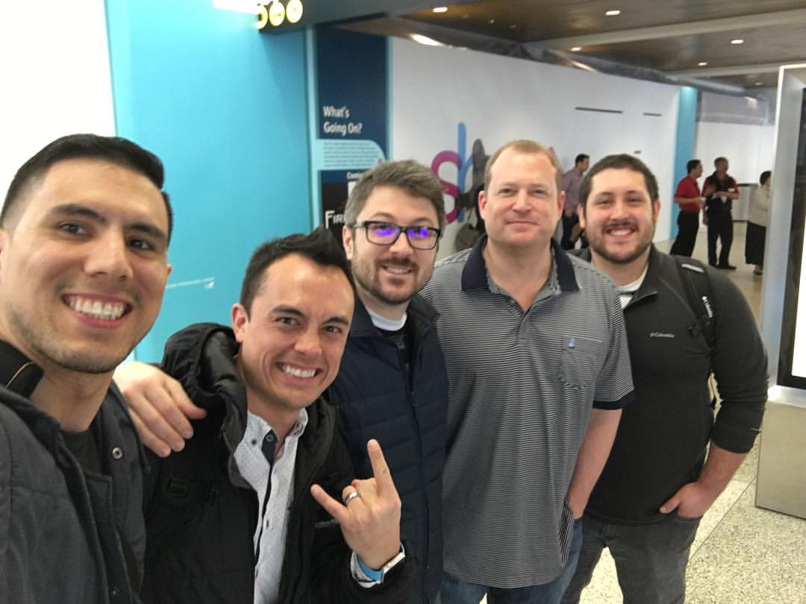

Mick Sexton
Software Engineer
Background, Interests, and Coding Portfolio
About Me

I am an easy-going guy who likes to spend much of my time doing something creative. This can range from anything like playing music to creating programs. I am originally from the east coast (Maryland and DC). My wife, Liz, and I moved out to Seattle in 2014 to buy a house and be closer to her family. I love to learn, and am usually juggling multiple books, podcasts, and audiobooks on topics ranging from philosophy, electronics, music theory, to history. When I'm not trying to build something, I'm usually trying to learn HOW to do it.
Background
I graduated from the University of Maryland in 2005 and quickly went into B2B sales. I have cold-called door to door, over the phone, worked trade shows, and presented at lectures, study clubs, and conferences. I also recently had the privilege to manage a sales team and take our company's SaaS products to new heights in units sold. Leading my sales team of 14 reps is one of my proudest moments, and I'm glad I had the opportunity to work with such motivated and talented professionals. While my sales career has been an amazing journey, my natural desires have always pushed me in the direction of wanting to do something more creative. My mom was a painter and a programmer, and I think her influence is still strong with me to this day, even though she is no longer with us. I have programmed as a hobby for years without much formal training aside from some night classes. Realizing how much I enjoyed this, I decided I was in a secure enough position to make a career change. I enrolled in Epicodus' Seattle bootcamp and just finished Week One.
While my sales career has been an amazing journey, my natural desires have always pushed me in the direction of wanting to do something more creative. My mom was a painter and a programmer, and I think her influence is still strong with me to this day, even though she is no longer with us. I have programmed as a hobby for years without much formal training aside from some night classes. Realizing how much I enjoyed this, I decided I was in a secure enough position to make a career change. I enrolled in Epicodus' Seattle bootcamp and just finished Week One.
Interests
 Music has been my primary hobby since high school. While my main instruments are guitar and lap steel, I have at one point or another, picked up a wide variety of instruments ranging from banjos, to organs, theremins, violins, and saxophones. I am currently learning to play the pedal steel right now. I have played in a handful of different bands, the most notable being Bearshark back when I was in DC. You can listen to our music HERE on Bandcamp.
Music has been my primary hobby since high school. While my main instruments are guitar and lap steel, I have at one point or another, picked up a wide variety of instruments ranging from banjos, to organs, theremins, violins, and saxophones. I am currently learning to play the pedal steel right now. I have played in a handful of different bands, the most notable being Bearshark back when I was in DC. You can listen to our music HERE on Bandcamp.